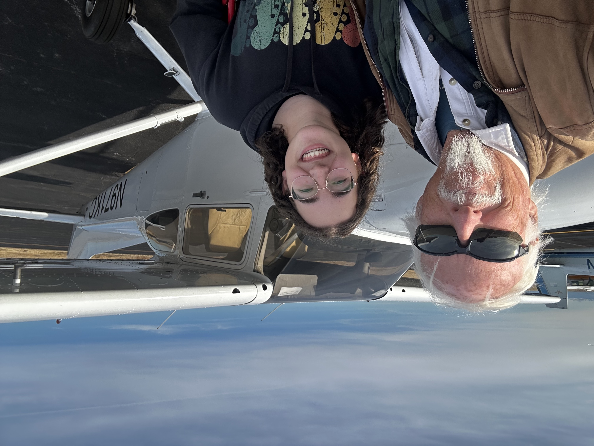
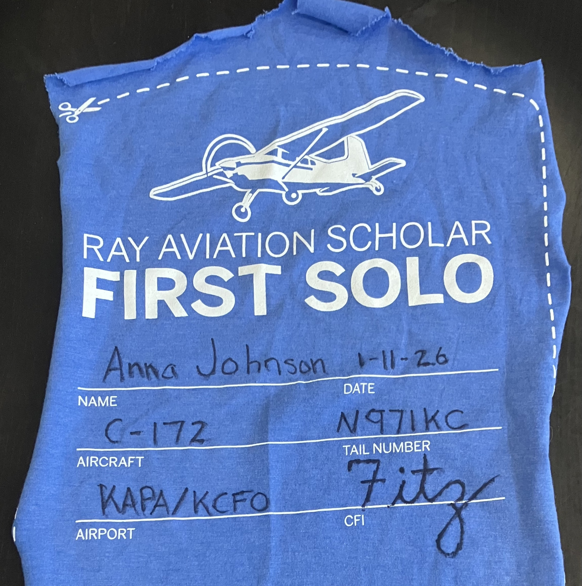

First Solo

On January 11th, 2026, I soloed for the first time. I did touch-and-gos at Colorado Air and Space Port (KCFO) in N971KC, a Cessna 172. After a short wait in the run-up area, I did two or three landings, taxied back to pick up my instructor, and flew back to Centennial. All in all, it went pretty well!
I had about 51 hours at the time, and had been flying for around 6 months. My instructor wanted to make sure I was completely ready, and looking back, I know that if he had pushed me to solo earlier, I would not have been ready. However, at the time, it was hard. I was having a lot of trouble with radio calls in the months preceding the solo, which was the main thing holding me back. To overcome this, I had been listening to the live ATC of my home airport, of Denver International, even of New York, to get the terminology in my head. I wrote a practice sheet for my instructor that detailed the calls required to go to and from Space Port (from Centennial) and transition through Buckley's airspace. And I practiced, and practiced, and practiced.
Learning to communicate with ATC is like learning a whole new language. It took a long time for me to learn what the controllers wanted, so I could tell what they were saying. After a lot of time and hard work, radio calls became easier, more natural. I knew what the tower might say, and that made understanding what they really said much easier. For example, when taking off, they might say "on-course approved", or "left turn eastbound approved", or something completely different like "east to KOA antennae, then on course". However, all are about what to do right after taking off, so I know when I will hear it — right after I get my clearance.
The outcome of all this practicing and hard work is that I am now a more confident and competent pilot. I have now done my cross country solo, and I feel like more than just a student. While I have a lot left to learn, I know I have accomplished the most formative stage, and I am ready for what comes next.

